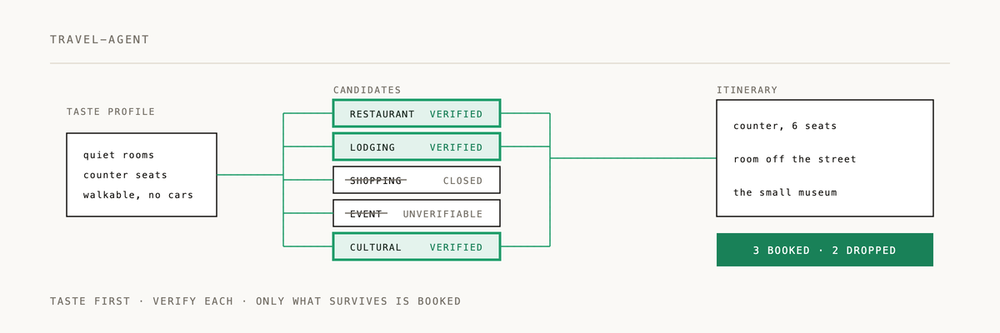

Travel Taste Concierge Skill

This package follows the Agent Skills folder convention: a required SKILL.md entry point with YAML metadata, plus progressively loaded references, templates, and evals.
A portable agent skill for:
- conducting a low-effort taste-profile interview;
- keeping taste separate from party and logistical constraints;
- discovering places through destination-local language and sources;
- transferring a known taste anchor into an unfamiliar locale;
- verifying whether a place is operating, open, and actually available;
- producing a short, actionable recommendation set rather than a generic list.
Package
SKILL.md— primary routing and operating contract.references/profile-interview.md— adaptive closed-form interview method.references/research-verification.md— discovery, evidence, and current-status workflow.references/output-contracts.md— response formats.references/state-schema.md— optional persistent-state model.references/japan-adapter.md— Japan-specific search and source conventions.templates/— reusable state, evidence, and compact project-context records.evals/scenarios.md— behavioral regression tests.
Installation
Place the entire directory wherever the host agent runtime loads skills. Keep the relative paths intact so SKILL.md can progressively load its references.
For a runtime that supports only one prompt file, use SKILL.md and append the relevant reference files manually. The core rules are intentionally duplicated enough that the main file remains safe when references are unavailable.
Recommended context layout
Keep reusable context in separate blocks:
<SKILL INSTRUCTIONS>
---
<PARTY DETAILS>
---
<TASTE PROFILE>
---
<CURRENT REQUEST>
Do not merge party details into the taste profile. The request-time agent should combine all four layers while preserving their different meanings and lifetimes.